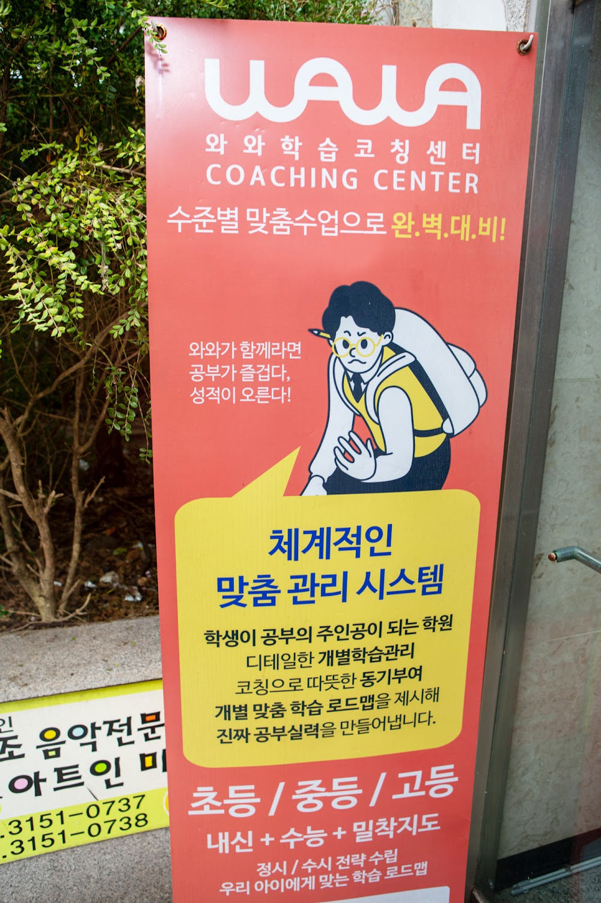
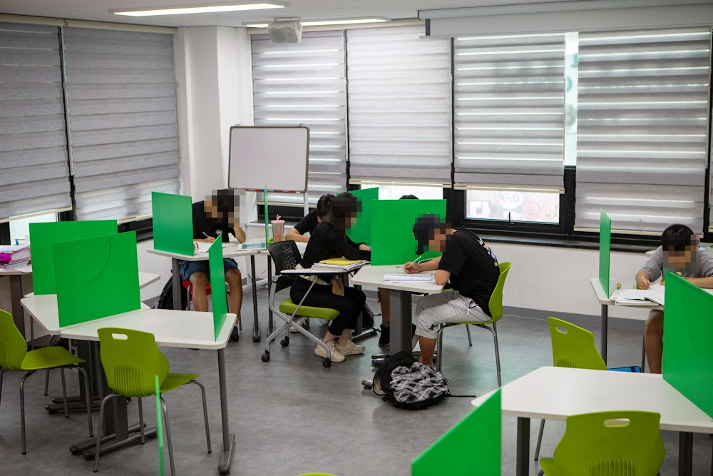
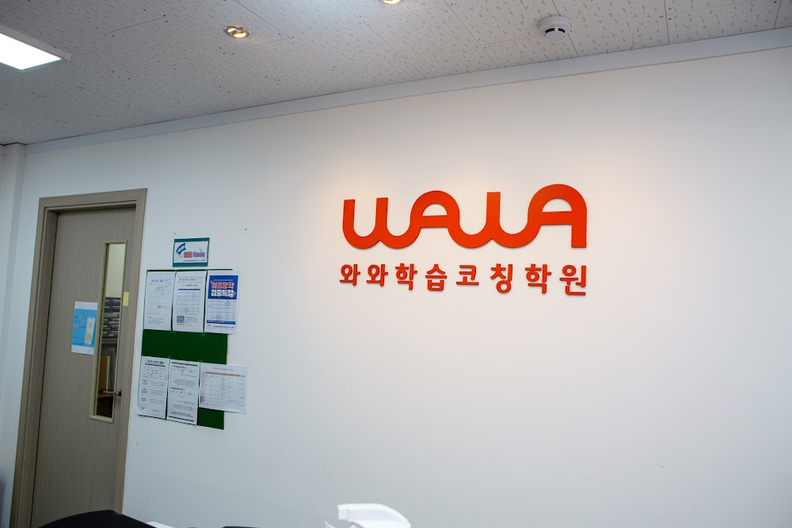

안녕하세요, 마포구 상암동 와와학습코칭 상암점입니다. "영어 단어는 외우는데 지문만 나오면 못 읽어요." 중·고등 학부모님이 가장 많이 하시는 고민입니다. 오늘은 상암점의 영어 독해력 훈련을 전해드립니다.
단어를 알아도 문장이 안 읽히는 이유
독해가 안 되는 학생은 대개 단어를 하나씩 '해석'만 합니다. 하지만 문장은 단어의 합이 아니라 구조입니다. 주어와 동사가 어디인지, 어디까지가 한 덩어리인지를 못 보면 아무리 단어를 알아도 뜻이 안 잡힙니다.
그래서 상암점은 해석을 시키기 전에 먼저 문장 구조를 눈으로 끊는 연습부터 시킵니다.

매일 짧은 지문, 스스로 읽기
독해력은 한 번에 늘지 않습니다. 매일 짧게, 스스로 읽는 것이 핵심입니다. 상암점 학생들은 매일 짧은 지문 하나를 이렇게 다룹니다.
- 모르는 단어에 표시하되, 먼저 문맥으로 뜻을 추측
- 문장의 주어·동사를 직접 끊어 표시
- 한 문장으로 글의 핵심을 요약해 말하기

읽는 힘이 모든 과목의 바탕입니다
독해력은 영어만의 문제가 아닙니다. 국어 지문도, 수학 문장제도, 결국 '읽고 이해하는 힘'에서 갈립니다. 그래서 상암점은 영어 독해 훈련을 모든 공부의 기초 체력으로 봅니다. 꾸준히 쌓인 읽기 힘은 학년이 올라갈수록 더 큰 차이를 만듭니다. 상암동 학부모님들, 읽는 힘부터 길러주세요.
.와와학습코칭 상암점 학년별 공부 방법
상암동 와와학습코칭(와와학습코칭 상암점)은 초등학생·중학생·고등학생 각 학년에 맞는 공부 방법으로 지도합니다. 조용한 자습실·공부방에서 스스로 공부하고, 영어학원·수학학원·과학학원·국어학원처럼 과목별 코칭까지 한곳에서 받을 수 있습니다.
- 초등학생 (초1·초2·초3·초4·초5·초6) — 매일 정해진 분량을 스스로 해내는 공부 습관과 기초 개념 잡기. 상암동 초등 영어학원·수학학원·공부방을 찾으신다면.
- 중학생 (중1·중2·중3) — 자유학년제·내신 대비, 오답 정리와 서술형 훈련. 상암동 중등 영어학원·수학학원·과학학원·국어학원.
- 고등학생 (고1·고2) — 내신과 수능을 함께 잡는 자기주도학습 플래닝과 취약 과목 집중. 상암동 고등 영수학원·종합학원·자기주도학습.
와와학습코칭 상암점 위치와 주변
- 🚇 교통 — 도보권 지하철역은 없지만, 상암월드컵파크 단지 한가운데에 있어 단지에서 걸어서 오실 수 있습니다 (수색역·DMC역은 버스 이용)
- 🏢 인근 아파트 — 상암월드컵파크 5·6·7·8단지 (도보 3~5분), 9·10·4단지 등 단지에서 도보로 오실 수 있습니다.
와와학습코칭 상암점 인근 학교
상암동 와와학습코칭(와와학습코칭 상암점)은 인근 학교 학생들의 내신·수능을 함께 준비합니다. 아래 학교에 다니는 학생이라면 영어학원·수학학원·과학학원·국어학원을 따로 찾을 필요 없이, 가까운 우리 센터에서 과목별 1:1 자기주도학습 코칭을 받을 수 있습니다.
- 인근 초등학교 — 중동초등학교, 상지초등학교, 상암초등학교 영어학원·수학학원·과학학원·국어학원
- 인근 중학교 — 상암중학교, 중암중학교, 성산중학교, 성사중학교, 덕은한강중학교 영어학원·수학학원·과학학원·국어학원
- 인근 고등학교 — 상암고등학교, 예일여고등학교, 대성고등학교, 숭실고등학교, 가재울고등학교 영어학원·수학학원·과학학원·국어학원
📍 와와학습코칭 상암점 센터 정보 자세히 보기 — 주소·전화·인근 학교 안내를 확인하실 수 있습니다.